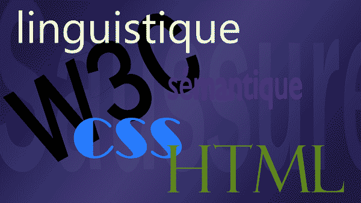

Que peut la linguistiquepour le web ?
Le Html et le CSS sont les deux principaux langages qui permettent de réaliser des pages web. La linguistique est une science humaine qui a pour objet l'étude de la langue.
Le Html et le CSS sont les deux principaux langages qui permettent de réaliser des pages web. La linguistique est une science humaine qui a pour objet l'étude de la langue.